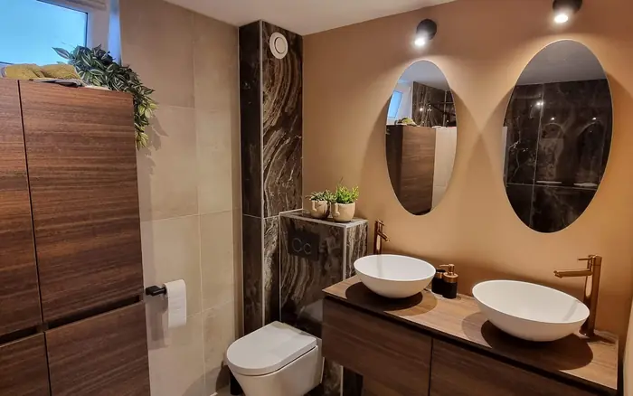
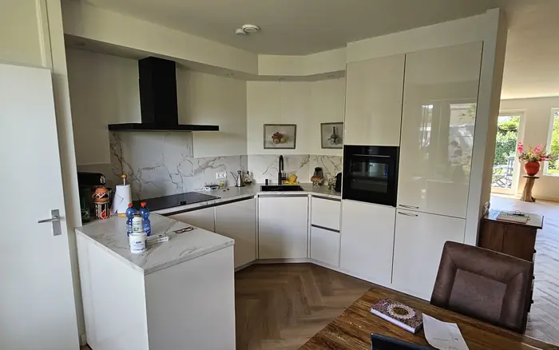
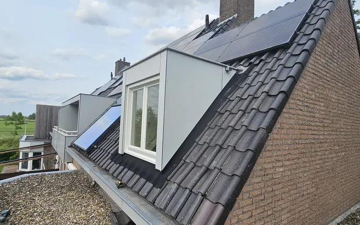
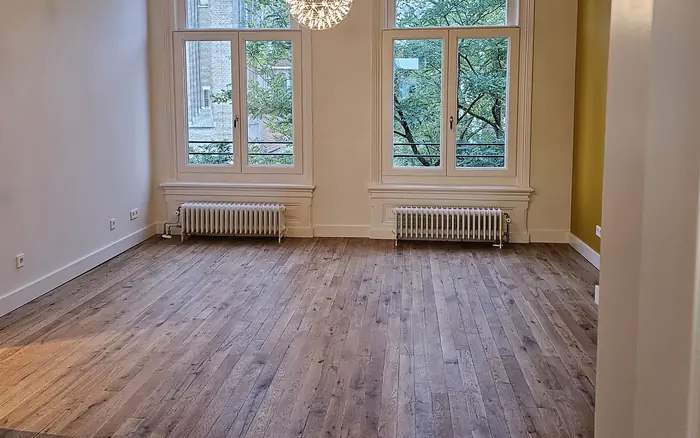
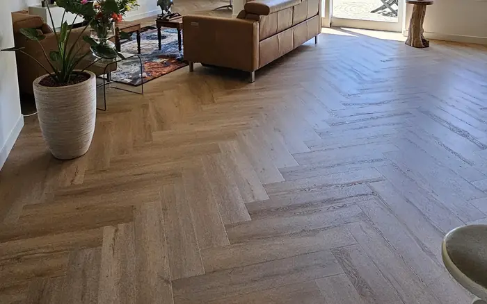
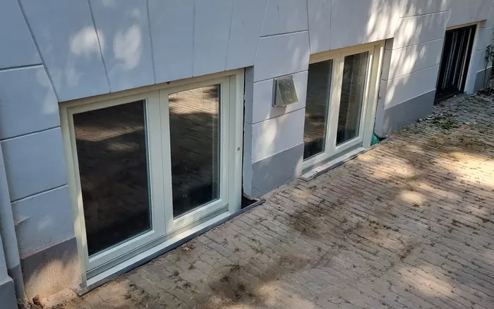

Badkamerverbouwingen
Van een functionele badkamer naar een ontspannende oase, passend bij uw stijl en budget.
- Van sloopwerk tot eindoplevering
- Tegelwerk, sanitair en badmeubel
- Inloopdouche of vrijstaand bad
Home / Diensten
Het werk van Van Burik, zoals het bedrijf het zelf indeelt en klanten het beschrijven.
"Of het nu om een grote verbouwing gaat of een kleinere klus", schreef Claire. Zo werkt Van Burik: van één ruimte tot het hele huis, ook voor bedrijfspanden.

Van een functionele badkamer naar een ontspannende oase, passend bij uw stijl en budget.

Uw nieuwe kookruimte, van ontwerp tot installatie, met aandacht voor functionaliteit en uitstraling.

Een zolderverbouwing, met isolatie en een dakkapel die van binnen netjes is afgetimmerd.

Een complete make-over van uw woning of bedrijfspand, of juist één specifieke aanpassing.

Vloerverwarming leggen en de vloer erop afwerken, van houten vloer tot visgraat.

Nieuwe kozijnen, en oude of verrotte boeiboorden vervangen.
Bel Patrick, of beschrijf in een paar regels wat er moet gebeuren.